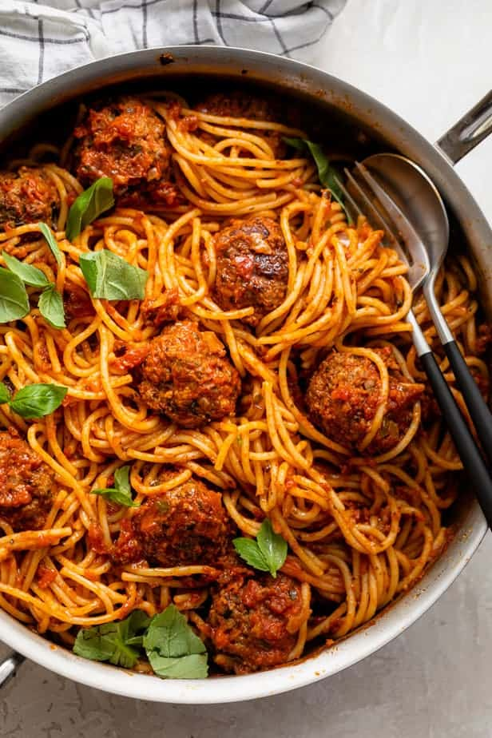

Spaghetti and Meatballs

Description
This is a recipe that is fairly easy to make almost anybody can do it! Spaghetti and Meatballs is
a dish that has become very popular not only in Italy but all over the world. The following recipe
will help you find the ingredients you need to make the dish yourself. We will give a list of basic
ingredients to get started. Then we will go step by step through the process of preparing the dish.
Take your time to familiarize yourself with the process before beginning. Now LET'S GO!
Ingredients
- 1 large egg
- 3 tablespoons finely chopped basil
- 3 tablespoons finely chopped parsley
- 1 teaspoon dried oregano
- 3/4 teaspoon salt
- 1/4 teaspoon freshly ground black pepper
- 2 cloves of garlic, minced
- 1/4 cup of water
- 1-1/2 pounds gorund beef or "Meatloaf Mix"
- 3/4 cup dried Italian style bread crumbs
- 1/2 cup freshly grated Parmesan cheese
- 32 oz jar of Marinara sauce
- 1 pound spaghetti
Steps
- Preheat oven to 350°F
- Whisk together the egg, basil, parsley, oregano, salt, pepper, garlic, and water.
Add the meat, cheese, and breadcrumbs and mix until combined. Be careful not to mix
too much, just enough for the ingredients to all be together.
- Roll the mix into meatballs about the size of a golf ball. Place meatballs on an
ungreased baking sheet. Bake for about 10 minutes, then remove the sheet and turn the
meatballs. Place the sheet in the oven for 10 more minutes until nicely brown.
- Simmer the Marinara sauce in a large skillet. Place the meatballs to simmer in the
Marinara sauce for about 10 minutes and cover with lid.
- While the meatballs are finishing boil a large pot of water. Add the spaghetti and
cook until softened but still firm. Drain the pasta and add the spaghetti to the sauce.
- Serve topped with fresh basil and more grated cheese